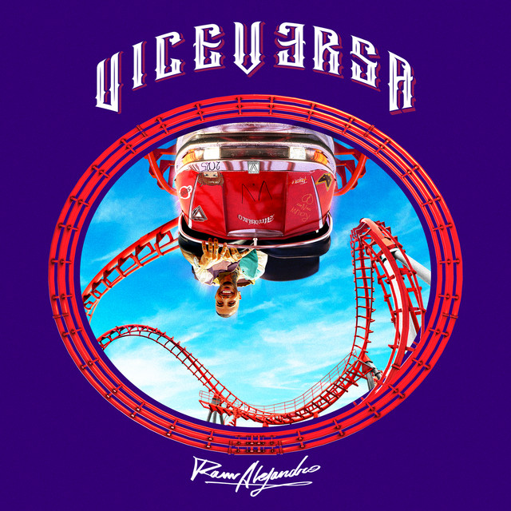
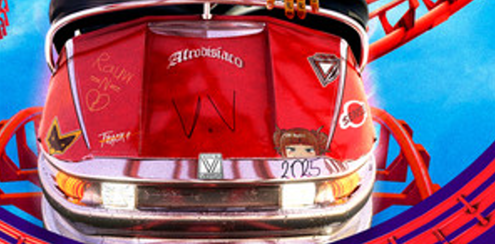
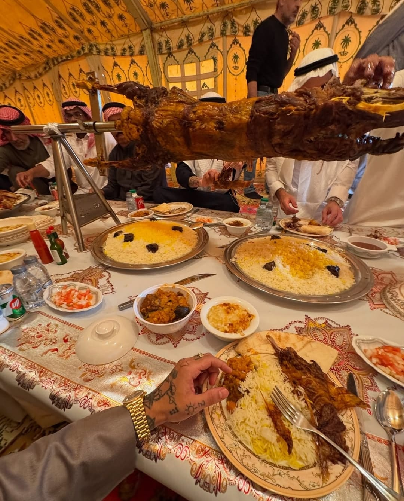
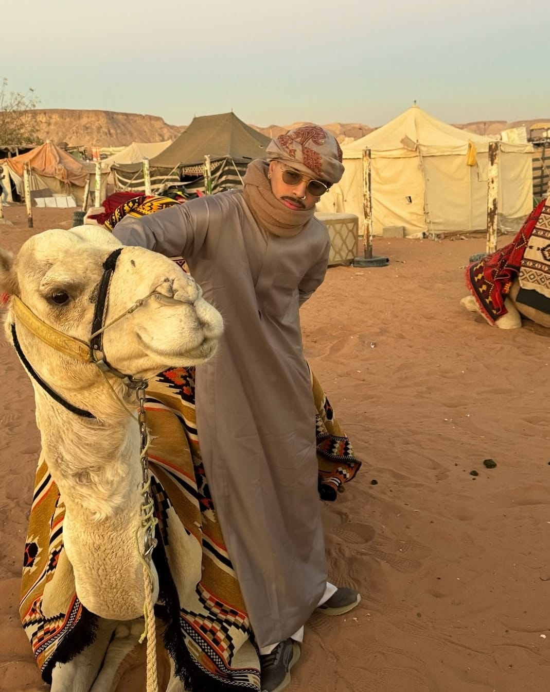
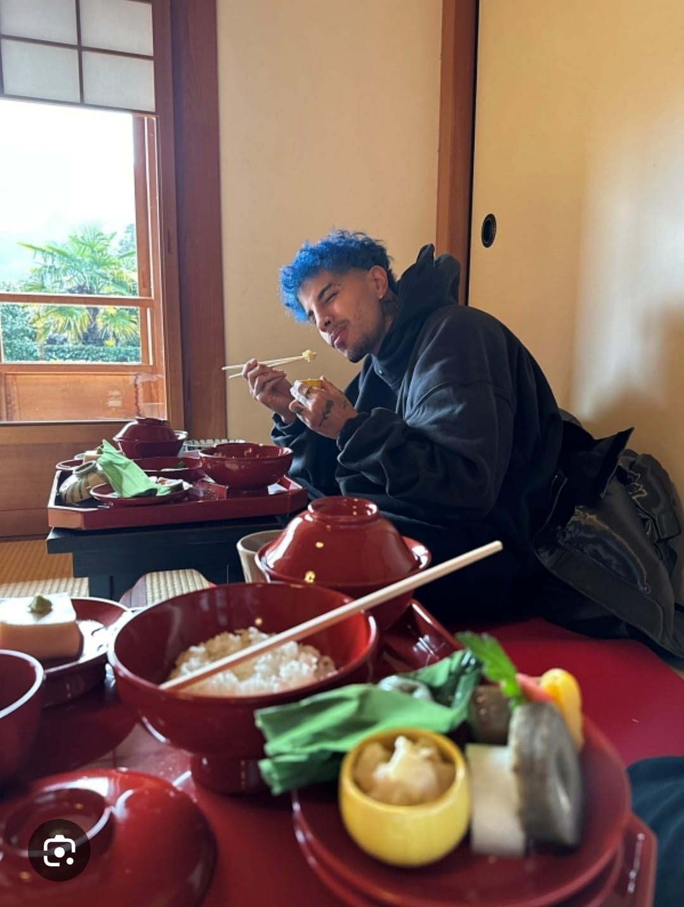
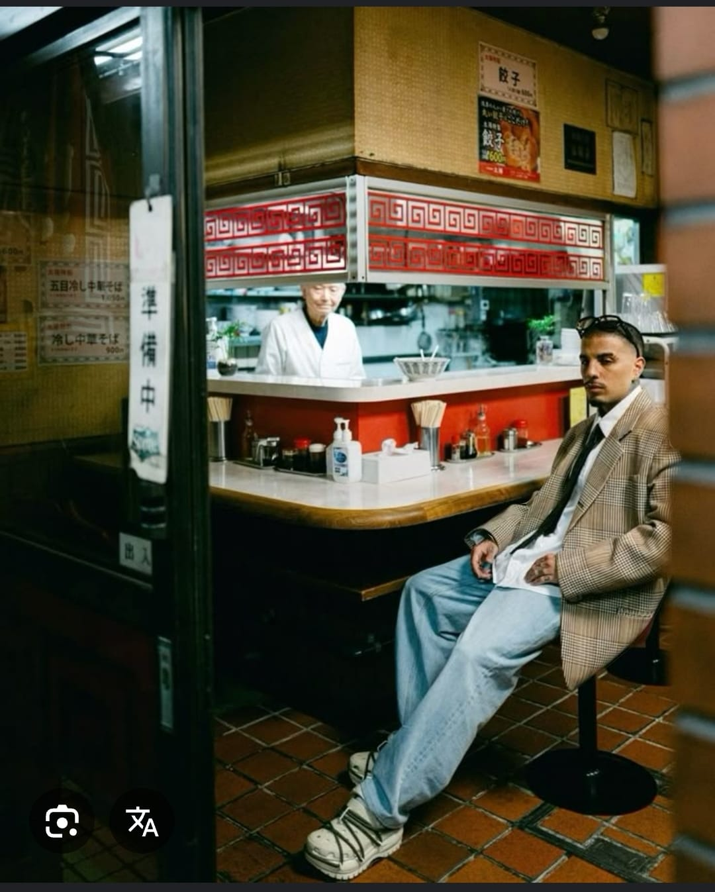
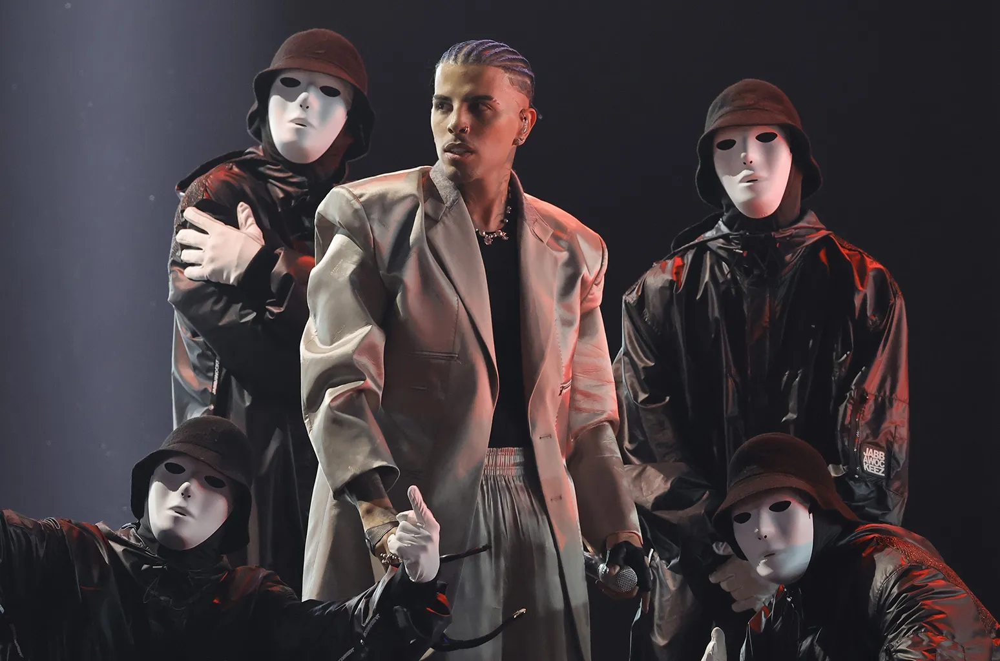
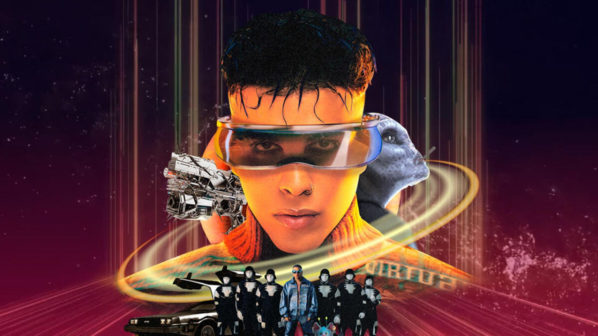
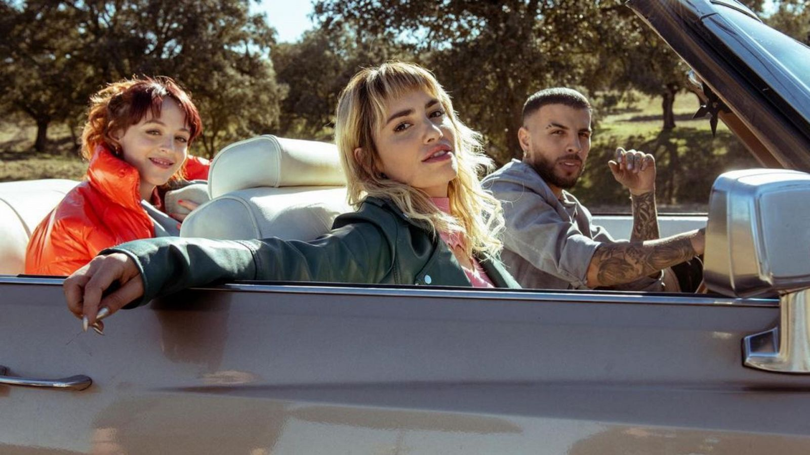

Biografie
Raúl Alejandro Ocasio Ruiz s-a născut pe 10 ianuarie 1993, în San Juan, Puerto Rico și a crescut în Canóvanas și Carolina.
Tatăl său, chitaristul Raúl Ocasio, fiul său Pedro Ocasio Ruiz și mama lui, vocalista María Nelly Ruiz, i-au prezentat unele dintre influențele sale muzicale precum Elvis Presley, Michael Jackson și Rihanna.
Timp de mulți ani, Alejandro și tatăl său au trăit în Statele Unite ale Americii, în principal în Miami și New York City, unde s-a inspirat din genurile R&B și dancehall.
Alejandro și colegul rapper portorican Anuel AA sunt prieteni din copilărie; amândoi au mers la aceeași școală și au avut cursuri împreună.
În copilărie, Alejandro a concurat în spectacolele de talente din școală pentru că are o pasiune pentru dans.
După absolvirea liceului, s-a înscris la Universitatea din Puerto Rico.
De la vârsta de șase ani, până la vârsta de douăzeci de ani, a jucat fotbal, dar mai târziu a renunțat pentru că „nu a putut performa așa cum se aștepta să facă” după ce a suferit o accidentare.
Muzica
De-a lungul anilor până în prezent, Rauw Alejandro a câștigat mai multe premii prin albumele sale.
Albumul de debut al acestuia, care i-a adus un câștig semnificativ, a fost Afrodisiaco, prin piesa cu cele mai multe vizualizări, în colaborare cu artistul Camilo, intitulată TATTO REMIX.
Anul următor a ieșit cu un alt album care i-a adus premii Latin Grammy, care l-a dăruit fanilor săi, albumul numit Viceversa, prin piesa numită TODO DE TI.
Începând cu anul 2022, acesta a decis să își dedice viața pentru muzică, îmbinând multe genuri muzicale, stând cu orele închis în studio și realizând albumul SATURNO (numele planetei preferate).
Anul următor a scos o continuare a acestuia, numită Playa Saturno, ce simbolizează, în viziunea artistului, întoarcerea în locurile natale, plaja din Puerto Rico.
Anul trecut a iesit in toamna cu un nou album ce indica o noua era a acestuia ,imbina mai multe genuri muzicale ale anilor 90 ,album numit Cosa Nuestra
In prezent se speculeste ca v-a scoate partea a doua a albumului Cosa Nuestra si ViceVersaII,care era un sneekpeek de cand a aparut Vicevesa in anul 2021
 | Numele albumului | Anul de lansare |
|---|---|
| Afrodisiaco | 2020 |
| Viceversa | 2021 |
| Saturno | 2022 |
| TrapCakeVol2 | |
| Playa Saturno | 2023 |
| Cosa Nuestra | 2024 |
| Cosa Nuestra 2 ?????? | 2025 |
| TrapCakeVol2 ???????? |
Turul lumi/Concerte
Prin debutul său ca artist, acesta a organizat de-a lungul anilor mai multe turnee, călătorind în toată lumea, precum Franța, Japonia, Mexic, Arabia Saudită.
Câteva imagini cu artistul în Arabia Saudită:
 Câteva imagini cu artistul în Japonia:
 Câteva imagini cu artistul la un concert dedicat albumului Saturno și banner cu acesta:
 Debutul ca actor
Artistul a debutat și ca actor, jucând un rol secundar în producția sezonului final din serialul de succes Sky Rojo.
Rolul pe care acesta îl joacă este Diego, un mecanic care intervine în problemele personajelor principale de a scăpa de Romeo, proxenetul care a pus oameni pentru a le găsi, deoarece aveau o datorie mare față de acesta.
